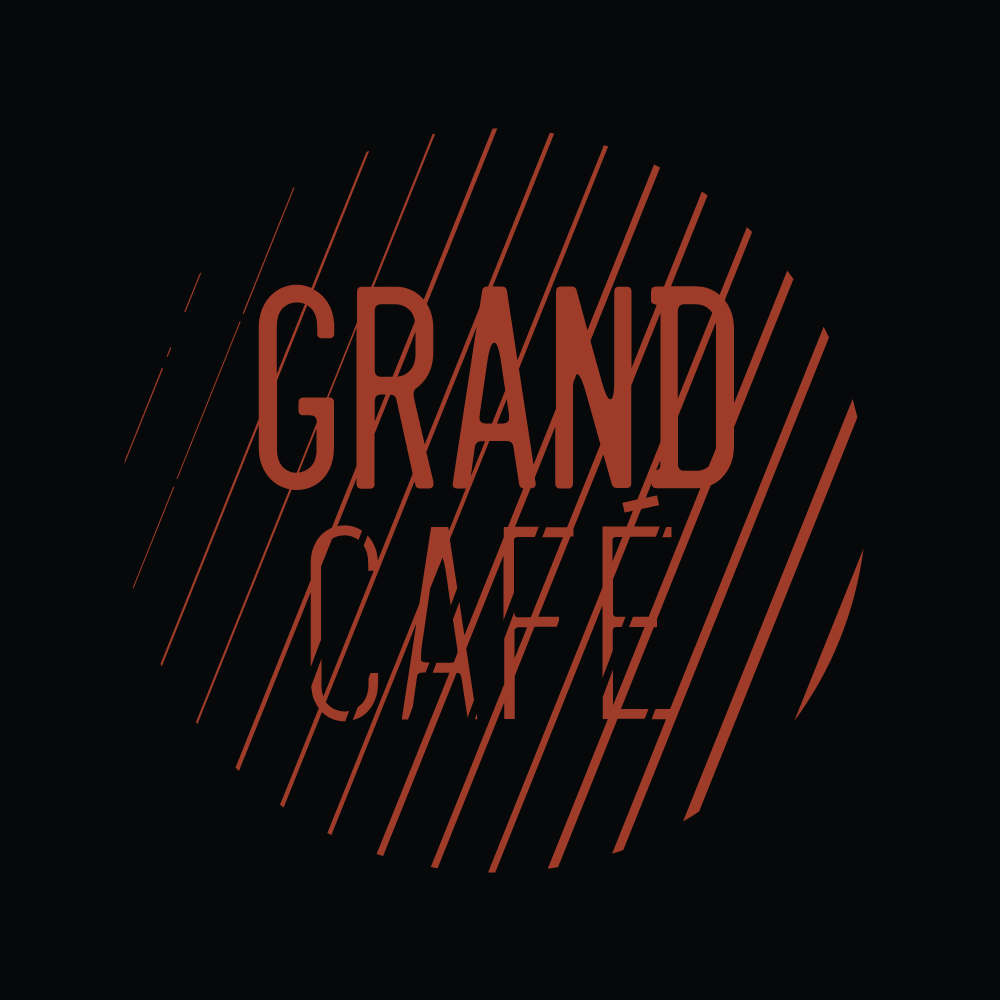
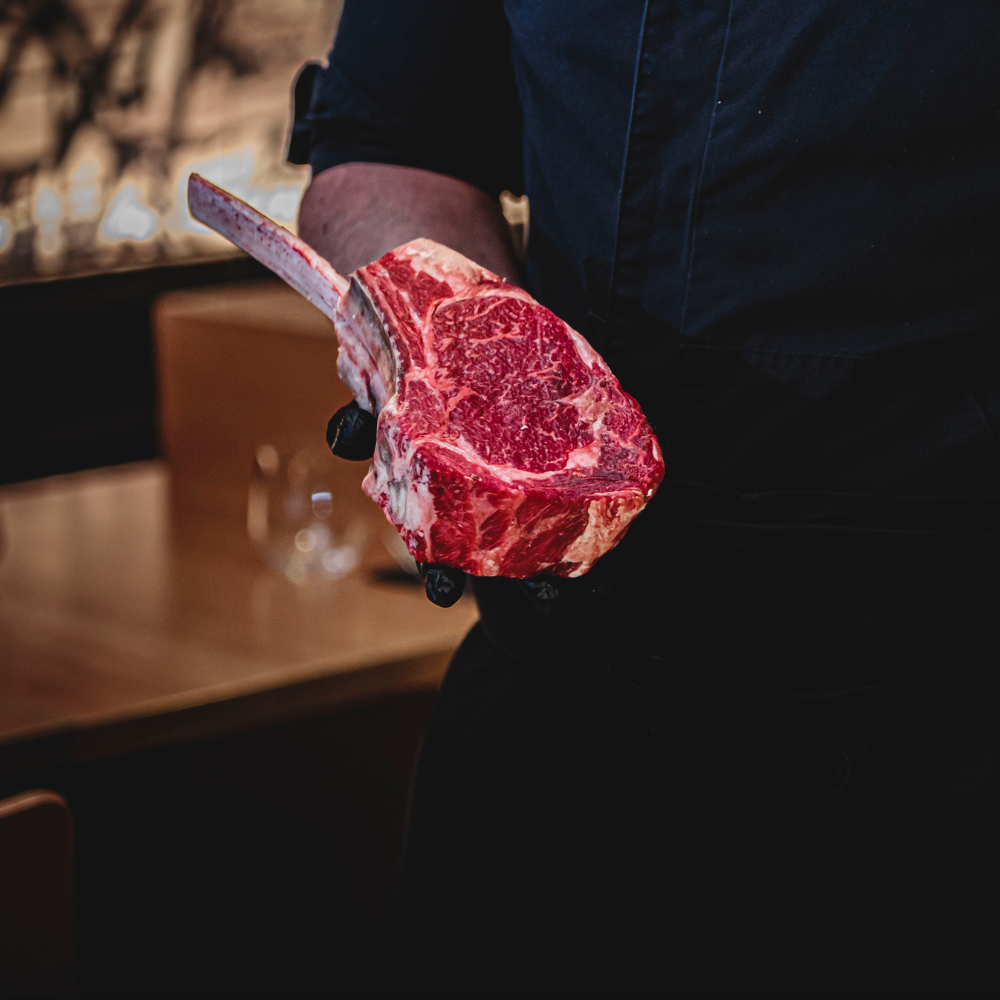
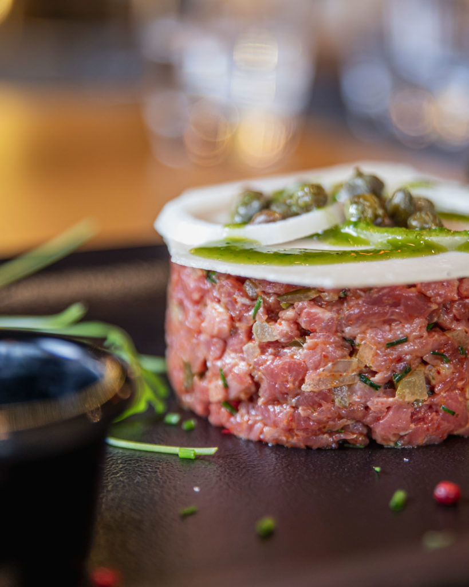
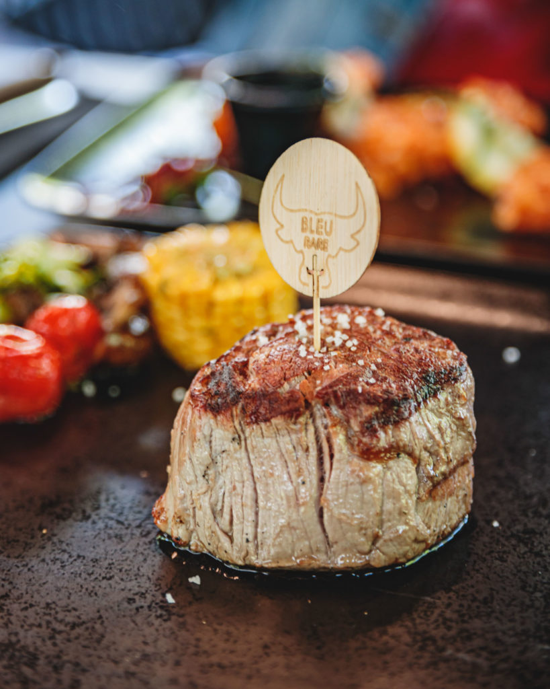
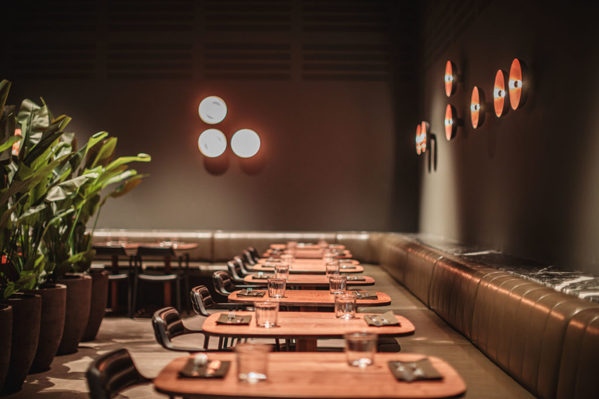
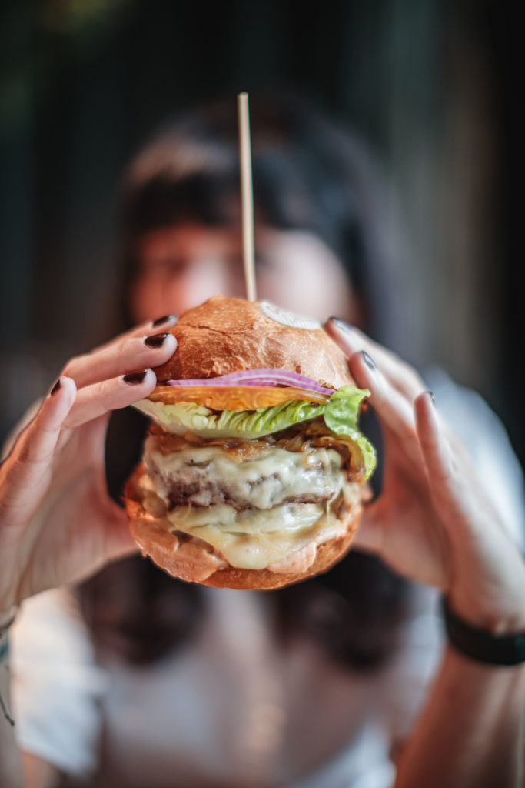
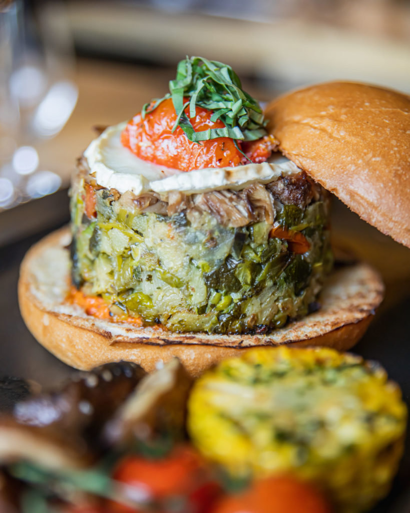
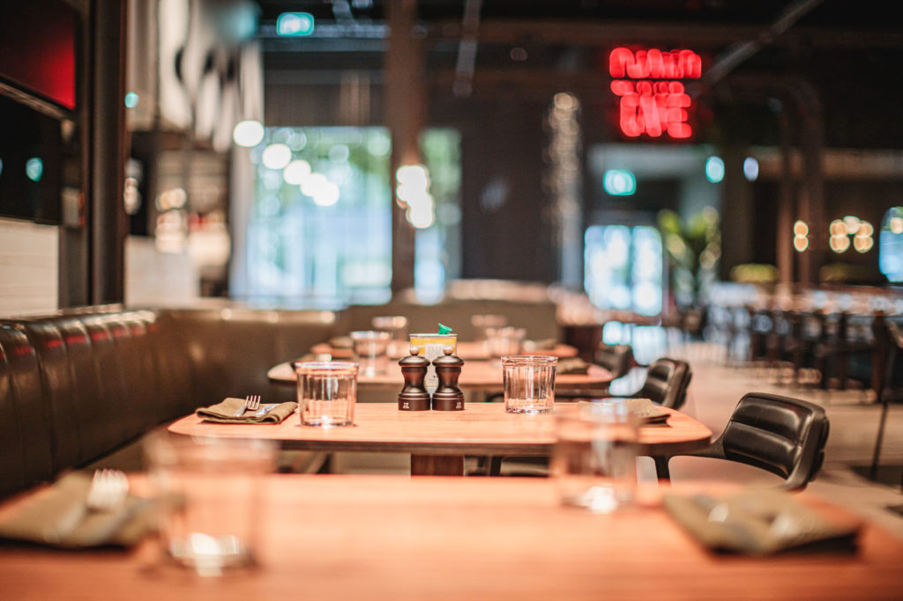
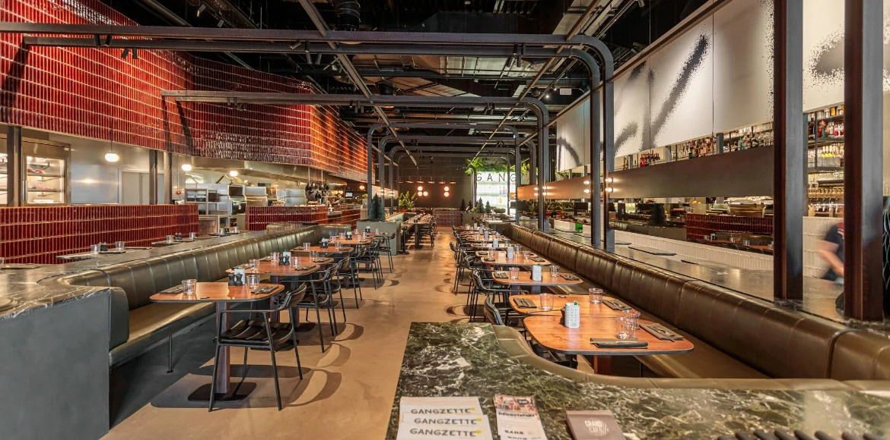

350°C
Braise Josper

GRAND CAFÉ Belle Étoile · Bertrange
Une sélection de viandes de prestige, maturées et saisies à la braise dans notre four Josper. Au cœur du foodmarket G.A.N.G., à la Belle Étoile.
— slogan proposé, à valider avec l'établissement




Grand Café, c'est la table carnivore du groupe RedBeef à la Belle Étoile. Toutes nos viandes sont sélectionnées, maturées puis saisies à la braise — pour une croûte fumée et un cœur fondant. Une brasserie de prestige, généreuse et décontractée, ouverte sur le foodmarket G.A.N.G.
De la rôtisserie aux pièces d'exception hebdomadaires, chaque assiette suit la même règle : le produit d'abord.
Angus, Simmental, Irish, Wagyu — des origines choisies pièce par pièce.
Affinage patient pour concentrer le goût et attendrir la fibre.
Saisie au charbon dans le four Josper, à haute température.
Pièces phares de la carte. La sélection de viandes maturées tourne chaque semaine — prix et disponibilités à confirmer avec l'établissement.


Acier apparent, cuisine ouverte carrelée de rouge, néon « GRAND CAFÉ » et banquettes en cuir olive — au sein du plus grand foodmarket du Luxembourg.

Une brasserie de prestige à l'esprit foodmarket : parfaite pour un déjeuner d'affaires, un dîner entre carnivores ou le brunch du dimanche en famille. Terrasse, parking privé, bornes de recharge — et bienvenue aux animaux.

Une envie carnivore ? Réservez en quelques secondes — nous vous recontactons pour confirmer. (Formulaire de démonstration.)
Les sources divergent — horaires à confirmer avec l'établissement.